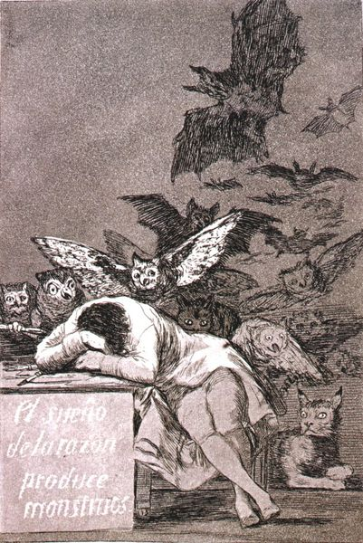

El sueño de la razón produce monstruos (1793-96)
Goya es posiblemente el mejor grabador de la historia del arte español. A través de sus estampas, especialmente con los Caprichos, realiza una interesante crítica a la sociedad española de la Ilustración. La serie de los Caprichos consta de 80 grabados realizados entre 1793 y 1796, poniéndose a la venta el 6 de febrero de 1799. Fueron ejecutados empleando aguafuerte y aguatinta pero la importancia de esta obra no radica en la realización sino en el contenido de sus imágenes, consideradas peligrosas para la época por su mordacidad. Toda la sociedad es criticada por el artista: la educación, la religión, la nobleza, la prostitución, etc., por lo que intervino la Inquisición. Para evitar problemas con la Inquisición, Goya regaló las planchas y los ejemplares sin vender a Carlos IV a cambio de una pensión para su hijo Javier. El sueño de la razón produce monstruos iba a presidir la serie en un principio, pero se le asignó el número 43 en la edición definitiva.
El personaje cae rendido sobre su mesa de trabajo, rodeado de una serie de monstruos y fantasmas. Con esta imagen querría indicar que la razón libera sus fantasmas durante el sueño. También podría aludir al deseo del artista de desenmascarar todos los monstruos de la sociedad a través de sus estampas, destacando así el poder de la razón sobre las tinieblas de la ignorancia, filosofía característica del pensamiento ilustrado.